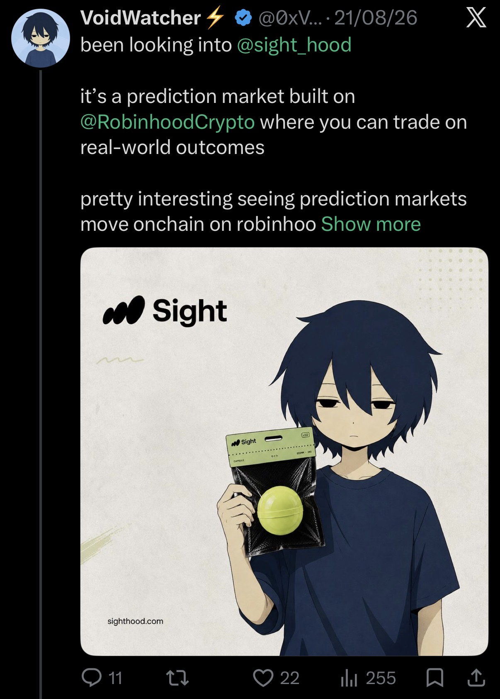
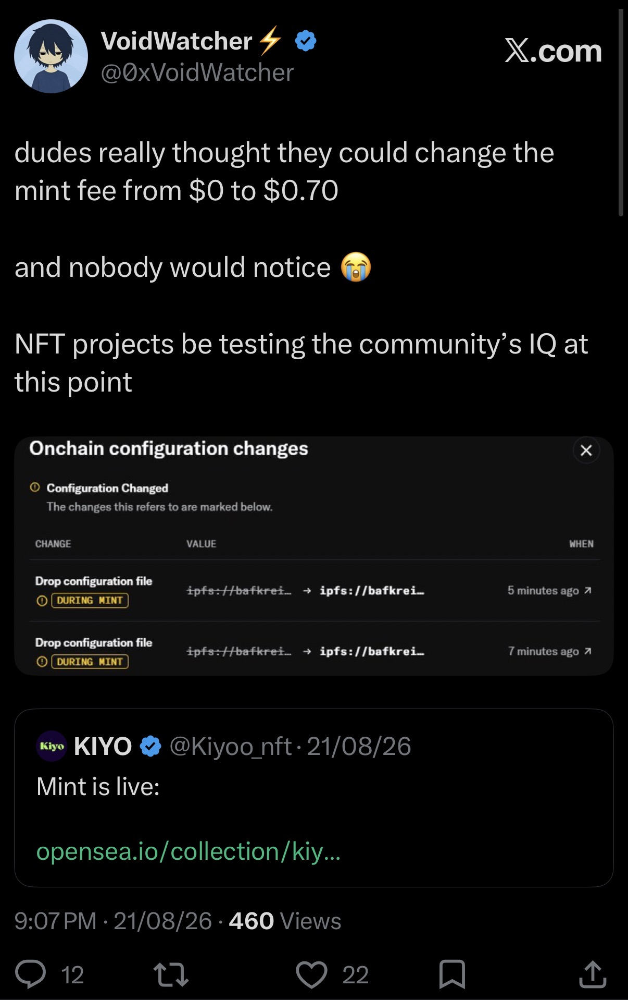
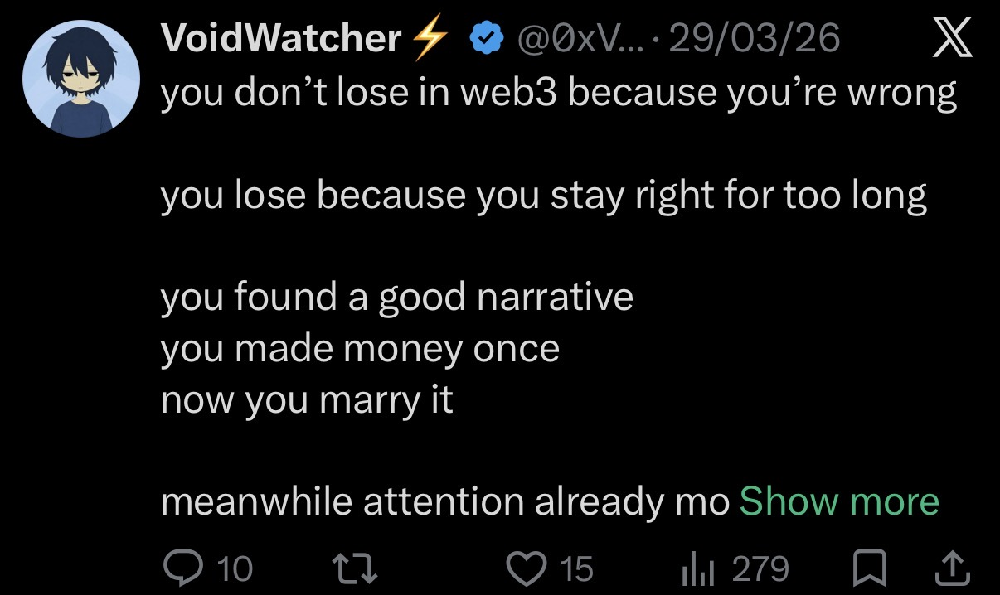
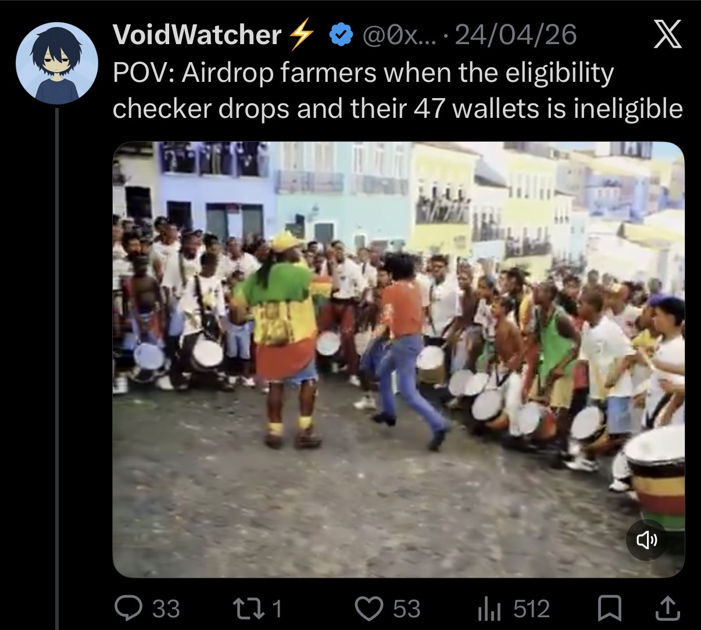
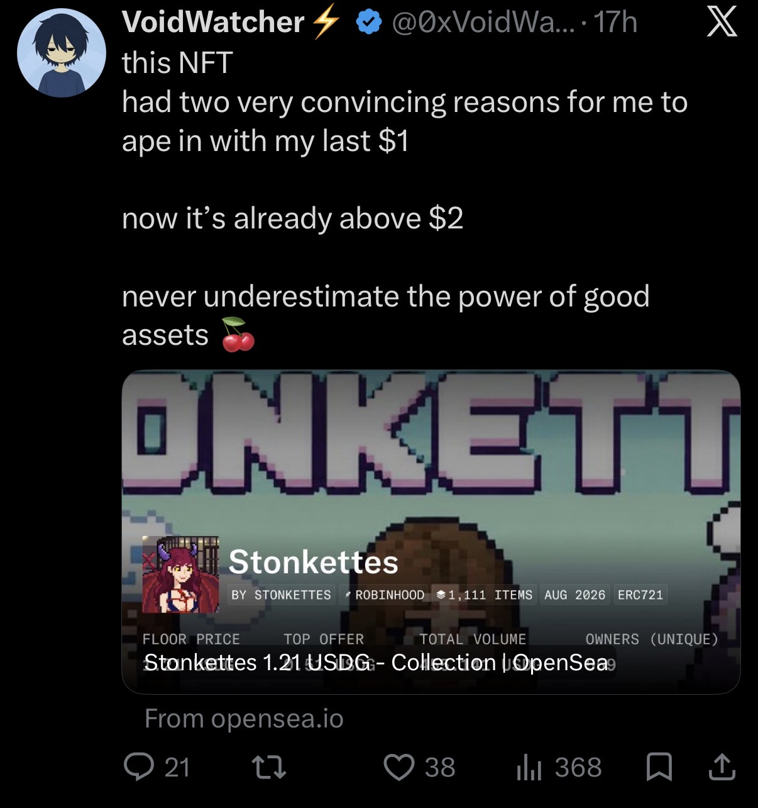

Crypto commentary
Research over social proof.
A sharp take on avoiding consensus-driven crypto theses and doing the actual research.
258 views · 22 likesVIEW ON X ↗
A sharp take on avoiding consensus-driven crypto theses and doing the actual research.

Exploring Sight and the idea of prediction markets moving onchain through Robinhood.

Calling out an unexpected mint-fee change and the onchain configuration behind it.

Why staying attached to yesterday's winning narrative can become the actual trade you lose.

CT-native shitposting around eligibility checkers, wallets and the realities of farming.

Personality-led NFT commentary with a real conviction story behind the post.
I represent Bless in community channels, help members, support onboarding, assist with community discussions, and contribute to events and community content including art and memes.
I work on day-to-day moderation and community operations, help coordinate moderation, handle member issues, maintain discussion quality, and keep the community clear of spam, scams and disruptive activity.